2025年度 活動報告
2025年4月から2026年3月まで、地域の皆さまと共に活動してきた1年間の記録です。
137
年間活動回数
12
活動月数
5+
連携施設・学校数
月別活動記録
2025年 4月
11回- 3・11・17・19日 東フレンドホーム（体操・よさこい指導）
- 8・15・22日 志免町社会教育（体操指導）
- 22・25日 篠栗町北勢門小学校（運動会よさこい指導）
- 30日 志免西小学校（運動会よさこい指導）
- 11日 習字教室
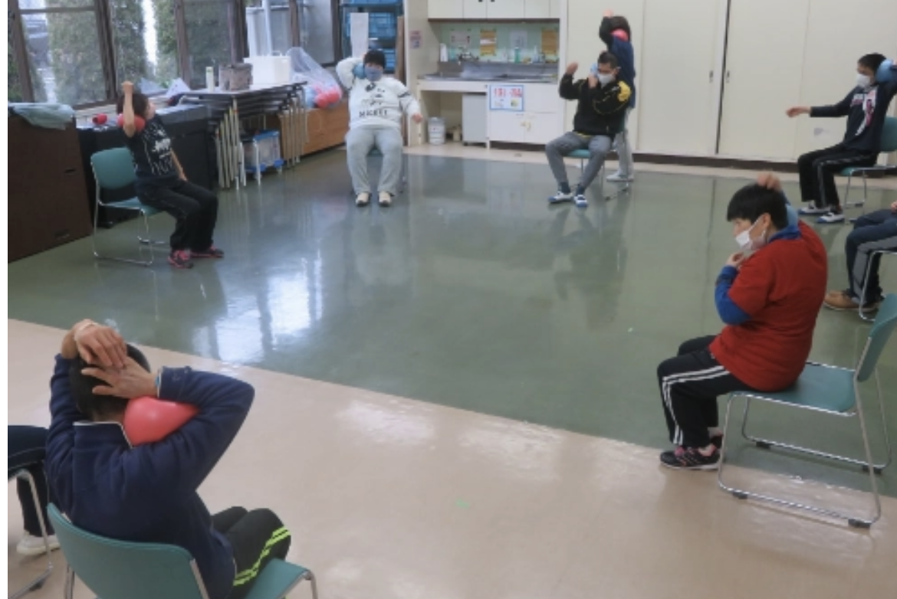
東フレンドホーム 体操指導
2025年 5月
23回- 3日 東フレンドホーム どんたく祭り参加
- 1・9・13・15・17・27日 東フレンドホーム（体操・よさこい指導）
- 13・20・27日 志免町社会教育（体操指導）
- 1・8・14・21日 須恵第一小学校（運動会よさこい指導）
- 7・9・15日 志免西小学校（運動会よさこい指導）
- 9・12・15・22日 宇美町原田小学校（運動会よさこい指導）
- 7・8日 篠栗町北勢門小学校（運動会よさこい指導）
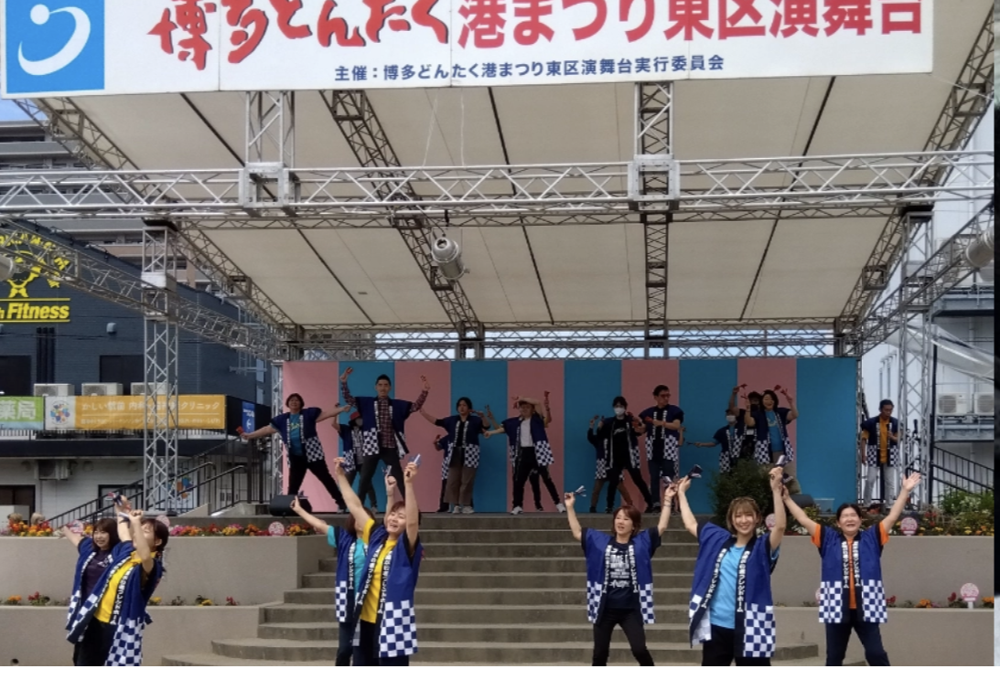
東フレンドホーム どんたく祭り参加
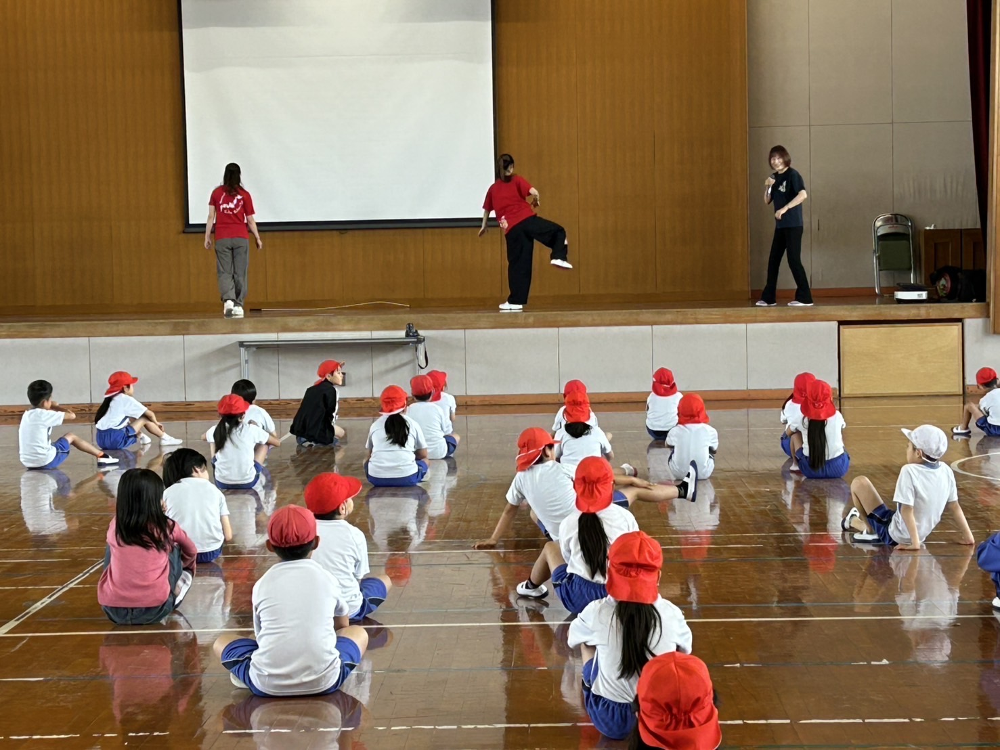
よさこい指導
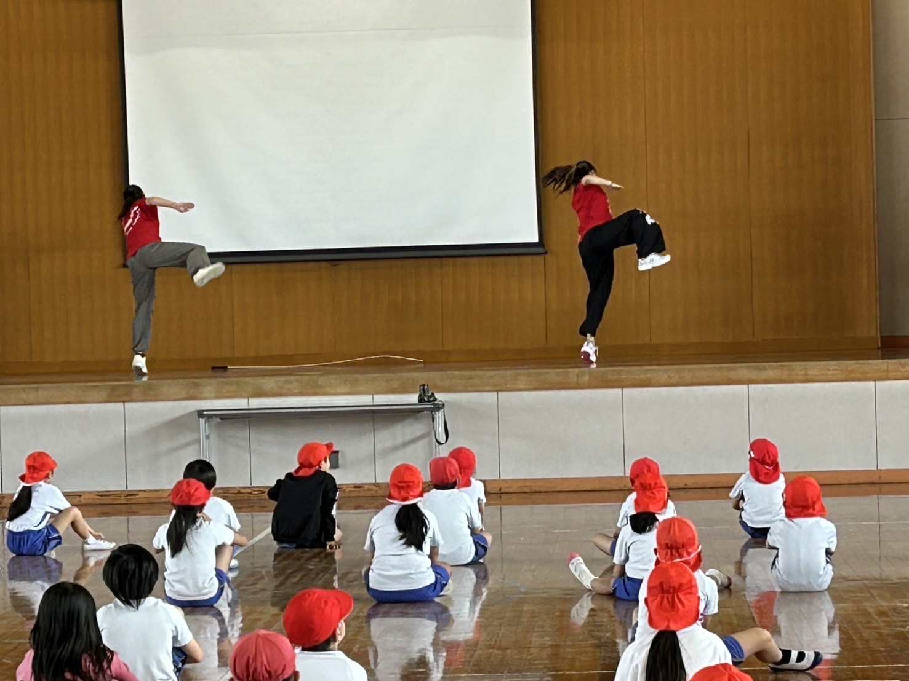
よさこい指導
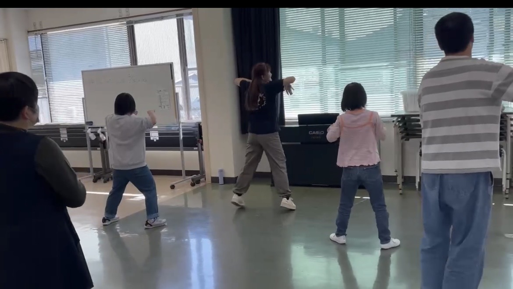
東フレンドホーム よさこい指導
2025年 6月
11回- 8日 東フレンド収穫祭
- 5・13・19・21・24日 東フレンドホーム（体操・よさこい指導）
- 3・10・17・24日 志免町社会教育（体操指導）
- 26日 習字教室
2025年 7月
10回- 3・8・13・17・19日 東フレンドホーム（体操・よさこい指導）
- 1・8・15・22・29日 志免町社会教育（体操指導）
2025年 8月
8回- 7・8・16・21日 東フレンドホーム（体操・よさこい指導）
- 5・19・26日 志免町社会教育（体操指導）
- 28日 習字教室
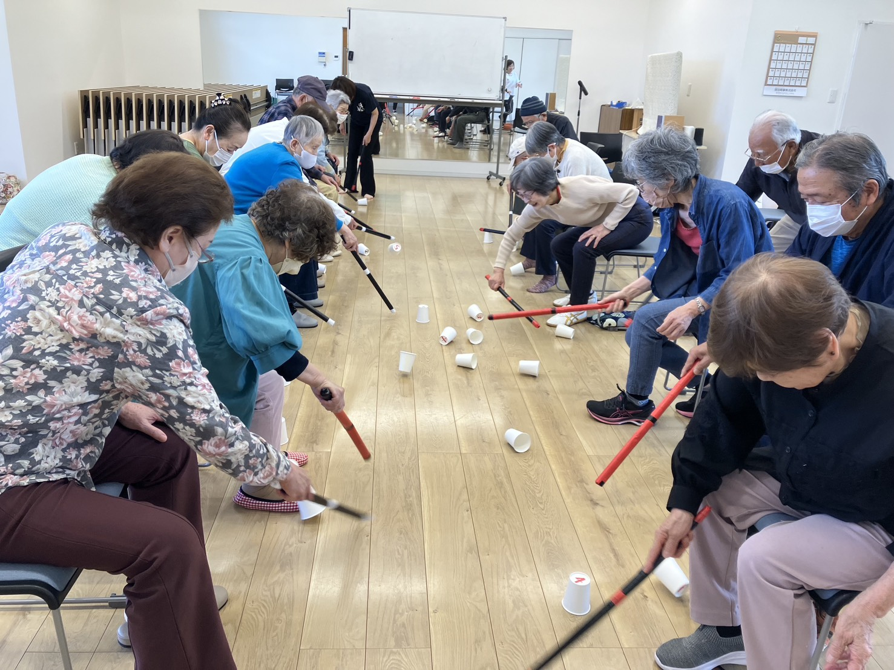
体操指導
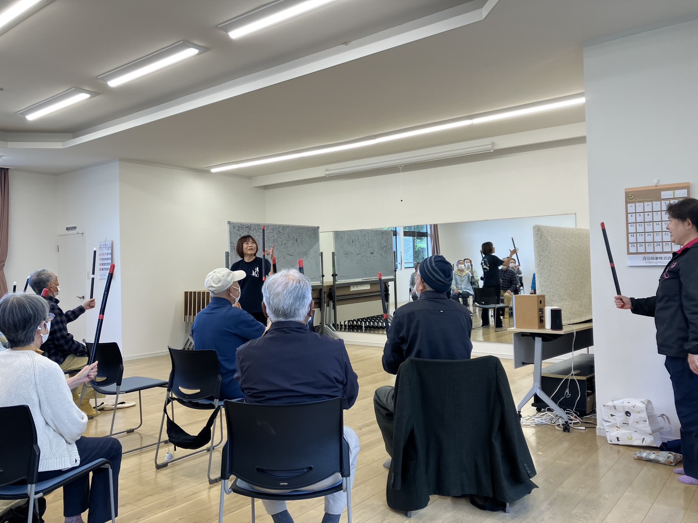
体操指導
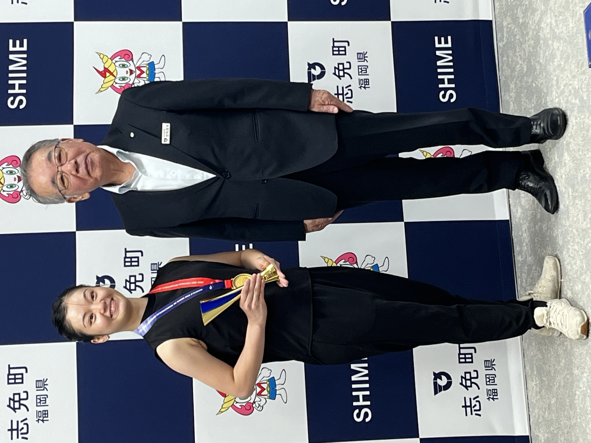
志免町長表敬訪問
2025年 9月
10回- 4・9・12・18・20日 東フレンドホーム（体操・よさこい指導）
- 2・9・16・30日 志免町社会教育（体操指導）
- 8日 志免西小学校（よさこいクラブ）
2025年 10月
12回- 2・10・16・18・28日 東フレンドホーム（体操・よさこい指導）
- 7・14・21・28日 志免町社会教育（体操指導）
- 23日 習字教室
- 4日 NPO法人地域支え合い互助基金イベント
- 27日 志免西小学校（よさこいクラブ）
2025年 11月
11回- 2日 東フレンドホームフェスタ
- 6・14・15・20・25日 東フレンドホーム（体操・よさこい指導）
- 4・11・18・25日 志免町社会教育（体操指導）
- 17日 志免西小学校（よさこいクラブ）
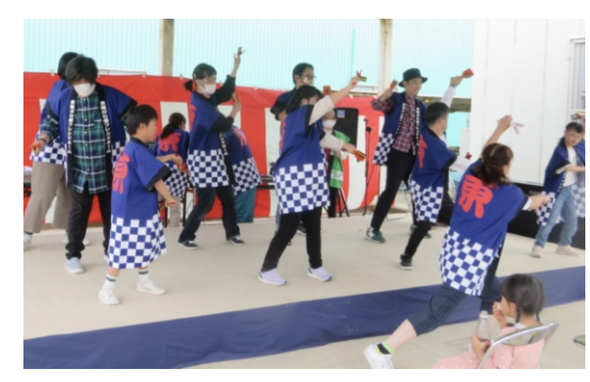
東フレンドホームフェスタ
2025年 12月
13回- 4・12・18・20日 東フレンドホーム（体操・よさこい指導）
- 2・9・16・23・30日 志免町社会教育（体操指導）
- 6日 体操フェスタ（千早並木ホール）
- 11日 習字教室
- 9日 東福岡特別支援学校 スポーツ指導
- 8日 志免西小学校（よさこいクラブ）
2026年 1月
9回- 9・13・17日 東フレンドホーム（体操・よさこい指導）
- 6・13・20・27日 志免町社会教育（体操指導）
- 25日 東フレンドホーム 餅つき
- 27日 東福岡特別支援学校 スポーツ指導
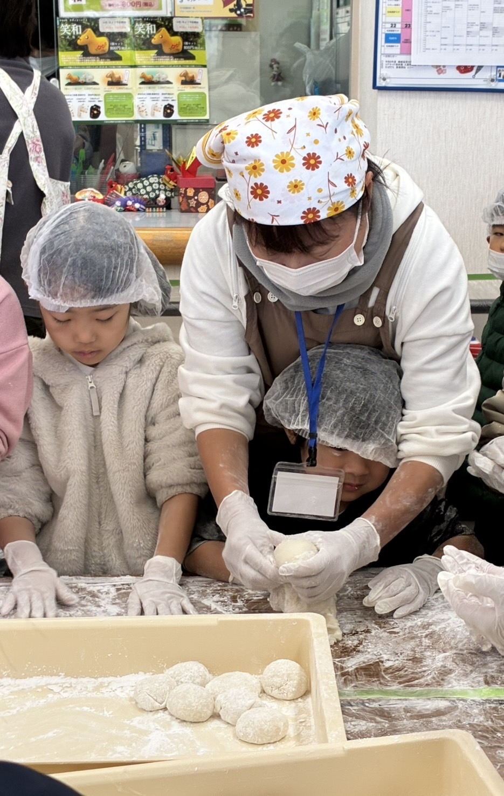
東フレンドホーム 餅つき
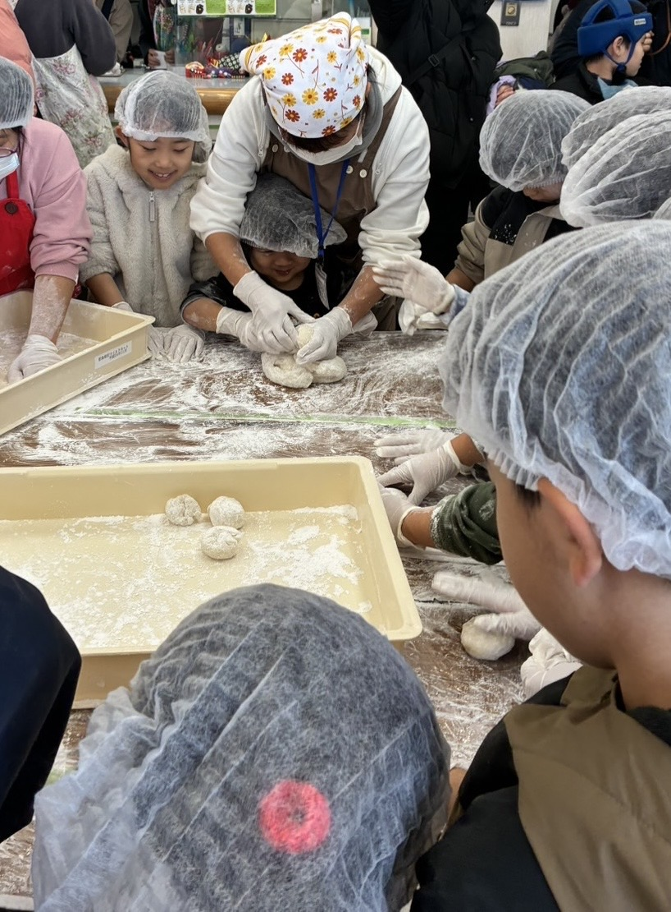
餅つき
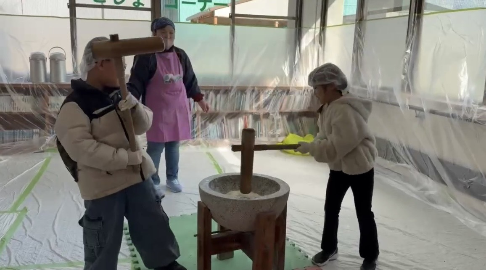
餅つき
2026年 2月
10回- 5・13・19・21日 東フレンドホーム（体操・よさこい指導）
- 3・10・17・24日 志免町社会教育（体操指導）
- 26日 習字教室
- 24日 東福岡特別支援学校 スポーツ指導
2026年 3月
9回- 5・13・19・21日 東フレンドホーム（体操・よさこい指導）
- 7・14・21・28日 志免町社会教育（体操指導）
- 10日 東福岡特別支援学校 スポーツ指導